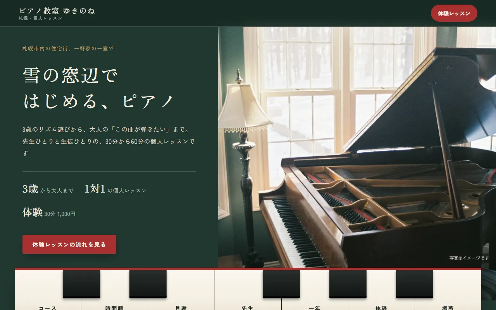

想定する困りごと
時間割や月謝はInstagramの投稿やチラシに分かれていて、保護者が「何曜日の何時に通えるか」「月にいくらかかるか」を調べきれない。体験の申し込みも、DMを送るまで流れが分からない。
制作例の解説 / DESIGN NOTES
通う前に知りたいことを、体験の申し込みより先に。
札幌の住宅街で、先生がひとりで教える個人のピアノ教室を想定した、1ページの教室案内です。
想定する方：ピアノ・書道・英会話・学習塾など、曜日と時間で通う習い事の教室

時間割や月謝はInstagramの投稿やチラシに分かれていて、保護者が「何曜日の何時に通えるか」「月にいくらかかるか」を調べきれない。体験の申し込みも、DMを送るまで流れが分からない。
コース → 1週間の時間割 → 月謝とほかの費用 → 先生 → 一年の行事 → 体験レッスンの流れ → 場所 → よくある質問の順。保護者が比べるときに見る「年齢・曜日・金額」を前半にまとめ、「家にピアノがない」「振替できるか」など、申し込む前に迷う点を最後に答えています。
目次を鍵盤の形にして、白鍵を押すとその項目へ移ります。時間割は連絡帳のような紙に書き、開いた日の曜日に「今日」の印が付きます。一年の行事は五線の上の音符で並べ、いまの月が分かるようにしました。色は写真の壁の深緑と、鍵盤の奥にある赤いフェルトから取っています。
載せる話題を5つまで・写真を5枚までに整理できる場合、店舗紹介サイトが候補です。先着5件の価格は29,800円（税込）、6件目からは49,800円（税込）。デザイン1案・修正2回・公開設定を含みます。
このサンプルと同じ8つの話題を載せる場合は、話題の追加が3つ（1つ8,800円）で、先着5件の価格なら56,200円（税込）、6件目からは76,200円（税込）が目安です。時間割の「今日」の印のような、開いた日で変わる表示は「いま営業中」表示（4,400円）と同じ扱いです。サンプル内の月謝や時間割は架空の設定で、制作料金ではありません。
文章の新規作成、写真撮影、予約システムの制作は対象外です。申し込みは公式LINEや電話、今お使いの予約サービスへのボタンでご案内します。この教室は実在しません。
この解説は架空の自主制作の設計意図です。実案件の成果・アクセス増加・売上改善を示すものではありません。写真はフリー素材のイメージです。